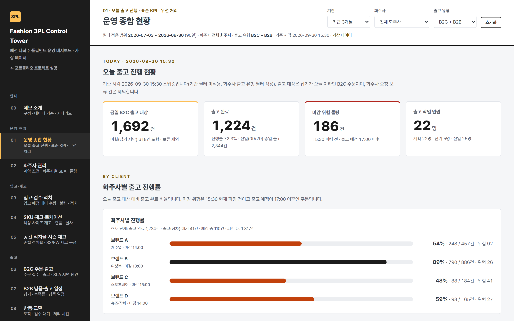
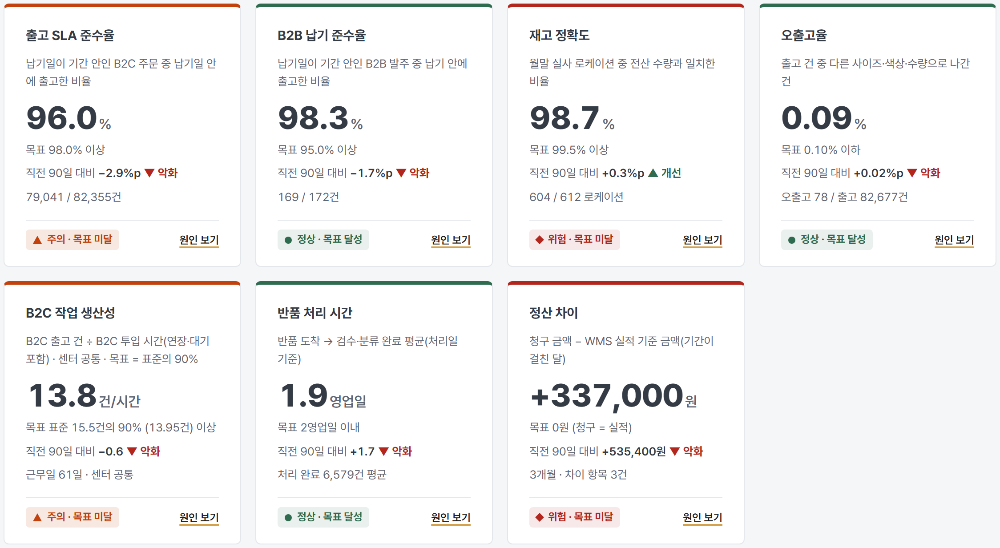
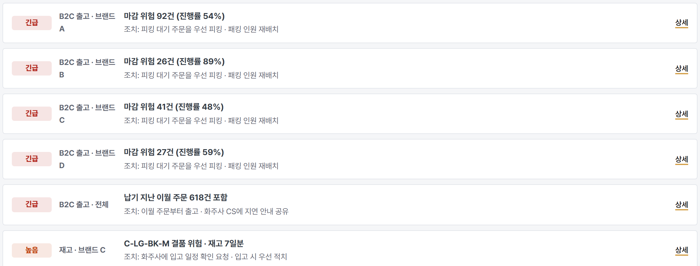
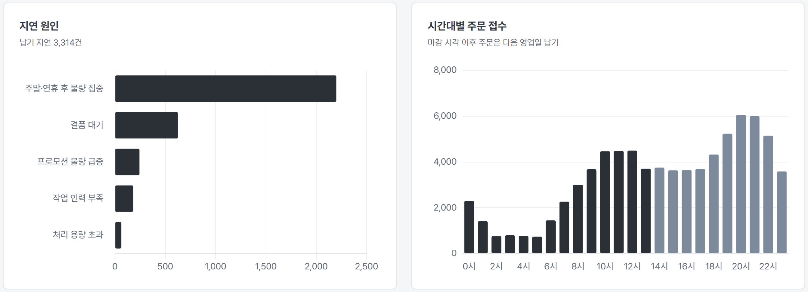
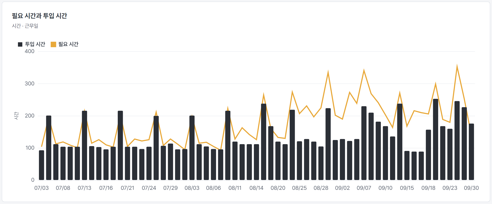
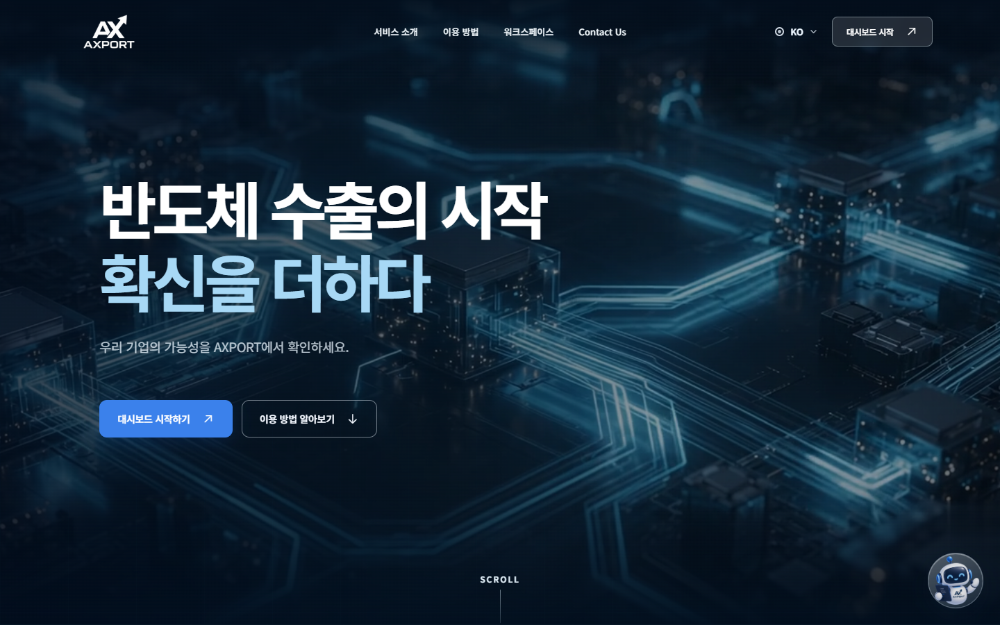

3PL·풀필먼트 · 물류 운영 · 데이터·자동화
현장을 이해하고,
데이터로 물류 운영을 개선합니다.
3PL·풀필먼트 센터에서 입출고, 재고, 인력, 화주사 및 정산 업무를 경험했습니다. 현장에서 쌓은 운영 경험에 데이터 분석과 자동화 역량을 더해 실질적인 업무 개선을 고민하고 있습니다.
3PL·풀필먼트 · 물류 운영 · 데이터·자동화
3PL·풀필먼트 센터에서 입출고, 재고, 인력, 화주사 및 정산 업무를 경험했습니다. 현장에서 쌓은 운영 경험에 데이터 분석과 자동화 역량을 더해 실질적인 업무 개선을 고민하고 있습니다.
CAREER HIGHLIGHTS
핵심 경력 지표는 회사별 수치이며 서로 합산하지 않았습니다.
재고 정확도(99%)와 오출고율(월 1% 미만)은 서로 다른 지표이며, 둘 다 제이아이로지스 재직 기간의 성과입니다. 오출고율은 6페이지에 따로 적었습니다.
01 / ABOUT
3PL과 풀필먼트 센터에서 입출고, 재고, 작업 인력과 출고 일정을 관리했습니다. WMS와 Excel로 운영 데이터를 확인하고, 화주사와 소통하며 정산과 마감, 작업 동선 같은 현장의 문제를 개선해 왔습니다.
이후 수입식품 통관 서류와 보세창고 일정을 다루며 물류의 앞단까지 경험을 넓혔습니다. 지금은 한국무역아카데미 무역 AX 2기에서 데이터 분석, AI, Python과 웹 기반 시스템을 배우고 있습니다.
02 / EXPERIENCE
회사별 운영 규모이며 서로 합산하지 않았습니다. 각 성과는 해당 재직 기간의 업무 경험 기준입니다.
2021.09 — 2022.03
주임 / 계장
메쉬코리아 김포 풀필먼트
다화주 풀필먼트 운영 · B2C·B2B 출고 · WMS · 화주사 대응
2022.04 — 2023.09
대리 / 센터장
운영3팀 · 다품종 소형가전 3PL 센터
센터 운영 · 재고 정확도 · 작업 생산성 · 인력 및 출고 관리
2023.12 — 2024.05
대리 / 팀장
물류운영부 · 인터지스 남동센터 · 상온 3PL
신규 운영 환경 구축 · WMS 초기 설정 · 작업 레이아웃 · 화주사 정산 · 마감 기간 단축
2024.06 — 2026.06
대리 / 팀원
경영지원실 무역행정팀 · 일본 수입식품 · 통관 및 출고 데이터 운영
수입통관 서류 검토 · 보세창고 운영 일정 · 라벨 작업 · D2C·B2B 출고 데이터
02 / EXPERIENCE — 센터 운영
센터 운영 · 재고 정확도 · 작업 생산성 · 인력 및 출고 관리
대표 성과
주요 역할
신규 운영 환경 구축 · WMS 초기 설정 · 작업 레이아웃 · 화주사 정산 · 마감 기간 단축
대표 성과
주요 역할
02 / EXPERIENCE — 풀필먼트 · 수입통관
다화주 풀필먼트 운영 · B2C·B2B 출고 · WMS · 화주사 대응
주요 역할
수입통관 서류 검토 · 보세창고 운영 일정 · 라벨 작업 · D2C·B2B 출고 데이터
대표 성과
주요 역할
03 / PROJECT 01 · 개인 프로젝트
패션 3PL·풀필먼트 운영 대시보드
다수의 패션 브랜드를 운영하는 3PL 물류센터를 가정하고, 입출고·재고·화주사·인력·반품·정산 현황을 한곳에서 확인할 수 있도록 설계한 운영 대시보드입니다. 물류센터 운영 실무 경험을 바탕으로 주요 KPI와 운영 시나리오를 정의하고 가상 데이터를 통해 구현했습니다.

운영 종합 현황 — 9/30 15:30 기준 출고 대상·완료·마감 위험·작업 인원과 화주사별 진행률 (가상 데이터)
과거에 패션 3PL 센터에서 근무했다는 뜻이 아니라, 기존 센터 운영 경험을 패션 다화주 환경에 적용해 본 개인 프로젝트입니다.
03 / PROJECT 01 · 해결 방법

표준 KPI 7개 — 목표·직전 기간 대비·상태 표시, ‘원인 보기’로 상세 화면 연결 (가상 데이터)
시드 고정 난수로 2026.04 ~ 09 (183일) — B2C 주문 164,001건, B2B 발주 360건, 입고 142건, 반품 11,863건. 하루 단위로 입고 → 적치 → 출고 → 반품 검수 → 재고 반영을 계산해, 결품·인력 결원이 SLA·재고·생산성 수치에 함께 나타나도록 했습니다.
화주사별 계약 조건(B2C 마감 시각 · SLA 목표 · B2B 납기 · 단가표 · 보관 존), 색상·사이즈 SKU와 로케이션, B2C·B2B 출고 구분을 하나의 데이터에서 연결
출고 SLA · B2B 납기 준수율 · 재고 정확도(실사 일치율) · 오출고율 · 작업 생산성 · 반품 처리시간 · 정산 차이를 분자·분모·기준일까지 정의하고 metrics.js 한 곳에서 계산
프로모션 주문 급증 · 특정 사이즈 결품 · 반품 적체 · B2B 납기 지연 · 작업 인력 부족을 하루 단위 계산에 반영
위험 KPI 확인 → 화주사별 상세 → 원인(지연 원인 · 결품 구간 · 필요 시간 대비 투입 시간 · 청구 차이) → 우선 처리 업무·이슈 로그

03 / PROJECT 01 · 주요 기능과 검증

B2C 주문·출고 — 납기 지연 원인 분해와 시간대별 주문 접수

인력·생산성 — 일별 필요 작업 시간 대비 투입 시간 (가상 데이터)
본 프로젝트는 개인 학습 및 포트폴리오 목적으로 설계한 시연용 시스템이며, 주문·재고·브랜드·물류비 데이터는 가상 데이터입니다. 실제 물류센터의 운영 성과를 검증한 것은 아닙니다.
03 / PROJECT 02 · 5인 팀 프로젝트
수출 적합도 분석 플랫폼
반도체 수출을 준비하는 기업의 엑셀 자료를 바탕으로 어느 나라에 팔기 좋은지, 가격·운송·규제·환율 안정성을 한 화면에서 비교하는 웹 서비스입니다.

AXPORT 대표 화면 · 3개 가상 기업 데이터를 고정 시드로 생성한 시연용 샘플 사용
03 / PROJECT 02 · 해결 방법과 결과
규제는 가중치 대신 감점형 관문으로 반영 · 안정성은 결제통화 환율 변동성과 과거 10년 분포를 비교
무료 서버(512MB) 강제 종료 문제 해결
단계별 메모리 측정으로 한국은행 원표 엑셀의 약 30MB 외부 링크 데이터가 원인임을 찾아, 읽는 값은 같게 유지한 채 최대 메모리를 줄였습니다 (로컬 측정 기준).
공개 배포본 자동 테스트 통과
Playwright 회귀 테스트 콘솔 오류
팀 확정 안정성 산식의 엔진 반영 일부 미완료, 물류 영역 실제 항만·공항 API 미연동, 실제 기업 데이터 기반 검증 미수행
04 / SKILLS & AX JOURNEY
숙련도를 점수로 매기지 않고, 실무 경험과 학습 중인 영역을 구분해 적었습니다.
실무 문제를 해결하기 위해 학습하고 개인·팀 프로젝트(Fashion 3PL Control Tower · AXPORT)에 적용 중
현장을 아는 사람에서, 직접 해결하는 사람으로
3PL · 재고 · 출고 · 정산 · 통관
한국무역아카데미 무역 AX 2기 — 데이터 분석 · Python · AI · 자동화
현장에서 실제로 쓸 수 있는 도구를 만드는 것이 목표입니다.
Contact
SCM · 물류 · 무역, 그리고 데이터와 기술의 접점에서.